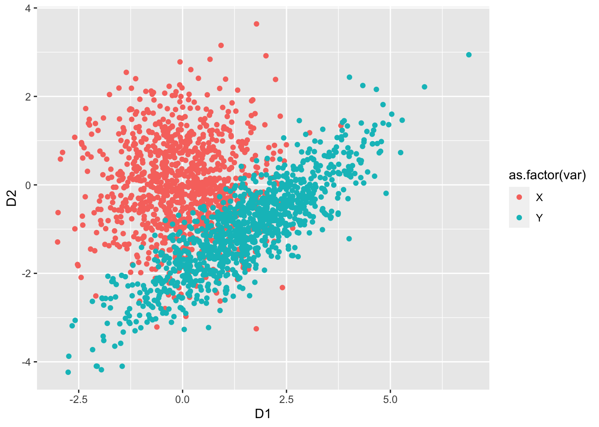

Chapter 8 Multivariate random variables
This chapter deals with multivariate random variables.
The students are expected to acquire the following knowledge:
Theoretical
- Multinomial distribution.
- Multivariate normal distribution.
- Cholesky decomposition.
- Eigendecomposition.
R
- Sampling from the multinomial distribution.
- Sampling from the multivariate normal distribution.
- Matrix decompositions.
8.1 Multinomial random variables
Exercise 8.1 Let \(X_i\), \(i = 1,...,k\) represent \(k\) events, and \(p_i\) the probabilities of these events happening in a trial. Let \(n\) be the number of trials, and \(X\) a multivariate random variable, the collection of \(X_i\). Then \(p(x) = \frac{n!}{x_1!x_2!...x_k!} p_1^{x_1} p_2^{x_2}...p_k^{x_k}\) is the PMF of a multinomial distribution, where \(n = \sum_{i = 1}^k x_i\).
Show that the marginal distribution of \(X_i\) is a binomial distribution.
Take 1000 samples from the multinomial distribution with \(n=4\) and probabilities \(p = (0.2, 0.2, 0.5, 0.1)\). Then take 1000 samples from four binomial distributions with the same parameters. Inspect the results visually.
Solution.
- We will approach this proof from the probabilistic point of view. W.L.O.G. let \(x_1\) be the marginal distribution we are interested in. The term \(p^{x_1}\) denotes the probability that event 1 happened \(x_1\) times. For this event not to happen, one of the other events needs to happen. So for each of the remaining trials, the probability of another event is \(\sum_{i=2}^k p_i = 1 - p_1\), and there were \(n - x_1\) such trials. What is left to do is to calculate the number of permutations of event 1 happening and event 1 not happening. We choose \(x_1\) trials, from \(n\) trials. Therefore \(p(x_1) = \binom{n}{x_1} p_1^{x_1} (1 - p_1)^{n - x_1}\), which is the binomial PMF. Interested students are encouraged to prove this mathematically.
set.seed(1)
nsamps <- 1000
samps_mult <- rmultinom(nsamps, 4, prob = c(0.2, 0.2, 0.5, 0.1))
samps_mult <- as_tibble(t(samps_mult)) %>%
gather()
samps <- tibble(
V1 = rbinom(nsamps, 4, 0.2),
V2 = rbinom(nsamps, 4, 0.2),
V3 = rbinom(nsamps, 4, 0.5),
V4 = rbinom(nsamps, 4, 0.1)
) %>%
gather() %>%
bind_rows(samps_mult) %>%
bind_cols("dist" = c(rep("binomial", 4*nsamps), rep("multinomial", 4*nsamps)))
ggplot(samps, aes(x = value, fill = dist)) +
geom_bar(position = "dodge") +
facet_wrap(~ key)
Exercise 8.2 (Multinomial expected value) Find the expected value, variance and covariance of the multinomial distribution. Hint: First find the expected value for \(n = 1\) and then use the fact that the trials are independent.
Solution. Let us first calculate the expected value of \(X_1\), when \(n = 1\).
\[\begin{align} E[X_1] &= \sum_{n_1 = 0}^1 \sum_{n_2 = 0}^1 ... \sum_{n_k = 0}^1 \frac{1}{n_1!n_2!...n_k!}p_1^{n_1}p_2^{n_2}...p_k^{n_k}n_1 \\ &= \sum_{n_1 = 0}^1 \frac{p_1^{n_1} n_1}{n_1!} \sum_{n_2 = 0}^1 ... \sum_{n_k = 0}^1 \frac{1}{n_2!...n_k!}p_2^{n_2}...p_k^{n_k} \end{align}\] When \(n_1 = 0\) then the whole terms is zero, so we do not need to evaluate other sums. When \(n_1 = 1\), all other \(n_i\) must be zero, as we have \(1 = \sum_{i=1}^k n_i\). Therefore the other sums equal \(1\). So \(E[X_1] = p_1\) and \(E[X_i] = p_i\) for \(i = 1,...,k\). Now let \(Y_j\), \(j = 1,...,n\), have a multinomial distribution with \(n = 1\), and let \(X\) have a multinomial distribution with an arbitrary \(n\). Then we can write \(X = \sum_{j=1}^n Y_j\). And due to independence \[\begin{align} E[X] &= E[\sum_{j=1}^n Y_j] \\ &= \sum_{j=1}^n E[Y_j] \\ &= np. \end{align}\] For the variance, we need \(E[X^2]\). Let us follow the same procedure as above and first calculate \(E[X_i]\) for \(n = 1\). The only thing that changes is that the term \(n_i\) becomes \(n_i^2\). Since we only have \(0\) and \(1\) this does not change the outcome. So \[\begin{align} Var[X_i] &= E[X_i^2] - E[X_i]^2\\ &= p_i(1 - p_i). \end{align}\] Analogous to above for arbitrary \(n\) \[\begin{align} Var[X] &= E[X^2] - E[X]^2 \\ &= \sum_{j=1}^n E[Y_j^2] - \sum_{j=1}^n E[Y_j]^2 \\ &= \sum_{j=1}^n E[Y_j^2] - E[Y_j]^2 \\ &= \sum_{j=1}^n p(1-p) \\ &= np(1-p). \end{align}\] To calculate the covariance, we need \(E[X_i X_j]\). Again, let us start with \(n = 1\). Without loss of generality, let us assume \(i = 1\) and \(j = 2\). \[\begin{align} E[X_1 X_2] = \sum_{n_1 = 0}^1 \sum_{n_2 = 0}^1 \frac{p_1^{n_1} n_1}{n_1!} \frac{p_2^{n_2} n_2}{n_2!} \sum_{n_3 = 0}^1 ... \sum_{n_k = 0}^1 \frac{1}{n_3!...n_k!}p_3^{n_3}...p_k^{n_k}. \end{align}\] In the above expression, at each iteration we multiply with \(n_1\) and \(n_2\). Since \(n = 1\), one of these always has to be zero. Therefore \(E[X_1 X_2] = 0\) and \[\begin{align} Cov(X_i, X_j) &= E[X_i X_j] - E[X_i]E[X_j] \\ &= - p_i p_j. \end{align}\] For arbitrary \(n\), let \(X = \sum_{t = 1}^n Y_t\) be the sum of independent multinomial random variables \(Y_t = [X_{1t}, X_{2t},...,X_{kt}]^T\) with \(n=1\). Then \(X_1 = \sum_{t = 1}^n X_{1t}\) and \(X_2 = \sum_{l = 1}^n X_{2l}\). \[\begin{align} Cov(X_1, X_2) &= E[X_1 X_2] - E[X_1] E[X_2] \\ &= E[\sum_{t = 1}^n X_{1t} \sum_{l = 1}^n X_{2l}] - n^2 p_1 p_2 \\ &= \sum_{t = 1}^n \sum_{l = 1}^n E[X_{1t} X_{2l}] - n^2 p_1 p_2. \end{align}\] For \(X_{1t}\) and \(X_{2l}\) the expected value is zero when \(t = l\). When \(t \neq l\) then they are independent, so the expected value is the product \(p_1 p_2\). There are \(n^2\) total terms, and for \(n\) of them \(t = l\) holds. So \(E[X_1 X_2] = (n^2 - n) p_1 p_2\). Inserting into the above \[\begin{align} Cov(X_1, X_2) &= (n^2 - n) p_1 p_2 - n^2 p_1 p_2 \\ &= - n p_1 p_2. \end{align}\]
8.2 Multivariate normal random variables
Exercise 8.3 (Cholesky decomposition) Let \(X\) be a random vector of length \(k\) with \(X_i \sim \text{N}(0, 1)\) and \(LL^*\) the Cholesky decomposition of a Hermitian positive-definite matrix \(A\). Let \(\mu\) be a vector of length \(k\).
Find the distribution of the random vector \(Y = \mu + L X\).
Find the Cholesky decomposition of \(A = \begin{bmatrix} 2 & 1.2 \\ 1.2 & 1 \end{bmatrix}\).
R: Use the results from a) and b) to sample from the MVN distribution \(\text{N}(\mu, A)\), where \(\mu = [1.5, -1]^T\). Plot a scatterplot and compare it to direct samples from the multivariate normal distribution (rmvnorm).
Solution.
\(X\) has an independent normal distribution of dimension \(k\). Then \[\begin{align} Y = \mu + L X &\sim \text{N}(\mu, LL^T) \\ &\sim \text{N}(\mu, A). \end{align}\]
Solve \[\begin{align} \begin{bmatrix} a & 0 \\ b & c \end{bmatrix} \begin{bmatrix} a & b \\ 0 & c \end{bmatrix} = \begin{bmatrix} 2 & 1.2 \\ 1.2 & 1 \end{bmatrix} \end{align}\]
# a
set.seed(1)
nsamps <- 1000
X <- matrix(data = rnorm(nsamps * 2), ncol = 2)
mu <- c(1.5, -1)
L <- matrix(data = c(sqrt(2), 0,
1.2 / sqrt(2), sqrt(1 - 1.2^2/2)),
ncol = 2,
byrow = TRUE)
Y <- t(mu + L %*% t(X))
plot_df <- data.frame(rbind(X, Y), c(rep("X", nsamps), rep("Y", nsamps)))
colnames(plot_df) <- c("D1", "D2", "var")
ggplot(data = plot_df, aes(x = D1, y = D2, colour = as.factor(var))) +
geom_point()
Exercise 8.4 (Eigendecomposition) R: Let \(\Sigma = U \Lambda U^T\) be the eigendecomposition of covariance matrix \(\Sigma\). Follow the procedure below, to sample from a multivariate normal with \(\mu = [-2, 1]^T\) and \(\Sigma = \begin{bmatrix} 0.3, -0.5 \\ -0.5, 1.6 \end{bmatrix}\):
Sample from two independent standardized normal distributions to get \(X\).
Find the eigendecomposition of \(X\) (eigen).
Multiply \(X\) by \(\Lambda^{\frac{1}{2}}\) to get \(X2\). Consider how the eigendecomposition for \(X2\) changes compared to \(X\).
Multiply \(X2\) by \(U\) to get \(X3\). Consider how the eigendecomposition for \(X3\) changes compared to \(X2\).
Add \(\mu\) to \(X3\). Consider how the eigendecomposition for \(X4\) changes compared to \(X3\).
Plot the data and the eigenvectors (scaled with \(\Lambda^{\frac{1}{2}}\)) at each step. Hint: Use geom_segment for the eigenvectors.
# a
set.seed(1)
sigma <- matrix(data = c(0.3, -0.5,
-0.5, 1.6),
nrow = 2,
byrow = TRUE)
ed <- eigen(sigma)
e_val <- ed$values
e_vec <- ed$vectors
# b
set.seed(1)
nsamps <- 1000
X <- matrix(data = rnorm(nsamps * 2), ncol = 2)
vec1 <- matrix(c(1,0,0,1), nrow = 2)
X2 <- t(sqrt(diag(e_val)) %*% t(X))
vec2 <- sqrt(diag(e_val)) %*% vec1
X3 <- t(e_vec %*% t(X2))
vec3 <- e_vec %*% vec2
X4 <- t(c(-2, 1) + t(X3))
vec4 <- c(-2, 1) + vec3
vec_mat <- data.frame(matrix(c(0,0,0,0,0,0,0,0,0,0,0,0,-2,1,-2,1), ncol = 2, byrow = TRUE),
t(cbind(vec1, vec2, vec3, vec4)),
c(1,1,2,2,3,3,4,4))
df <- data.frame(rbind(X, X2, X3, X4), c(rep(1, nsamps),
rep(2, nsamps),
rep(3, nsamps),
rep(4, nsamps)))
colnames(df) <- c("D1", "D2", "wh")
colnames(vec_mat) <- c("D1", "D2", "E1", "E2", "wh")
ggplot(data = df, aes(x = D1, y = D2)) +
geom_point() +
geom_segment(data = vec_mat, aes(xend = E1, yend = E2), color = "red") +
facet_wrap(~ wh) +
coord_fixed()
Exercise 8.5 (Marginal and conditional distributions) Let \(X \sim \text{N}(\mu, \Sigma)\), where \(\mu = [2, 0, -1]^T\) and \(\Sigma = \begin{bmatrix} 1 & -0.2 & 0.5 \\ -0.2 & 1.4 & -1.2 \\ 0.5 & -1.2 & 2 \\ \end{bmatrix}\). Let \(A\) represent the first two random variables and \(B\) the third random variable. R: For the calculation in the following points, you can use R.
Find the marginal distribution of \(B\).
Find the conditional distribution of \(B | A = [a_1, a_2]^T\).
Find the marginal distribution of \(A\).
Find the conditional distribution of \(A | B = b\).
R: Visually compare the distributions of a) and b), and c) and d) at three different conditional values.
mu <- c(2, 0, -1)
Sigma <- matrix(c(1, -0.2, 0.5,
-0.2, 1.4, -1.2,
0.5, -1.2, 2),
nrow = 3,
byrow = TRUE)
mu_A <- c(2, 0)
mu_B <- -1
Sigma_A <- Sigma[1:2, 1:2]
Sigma_B <- Sigma[3, 3]
Sigma_AB <- Sigma[1:2, 3]
# b
tmp_b <- t(Sigma_AB) %*% solve(Sigma_A)
mu_b <- mu_B - tmp_b %*% mu_A
Sigma_b <- Sigma_B - t(Sigma_AB) %*% solve(Sigma_A) %*% Sigma_AB
mu_b## [,1]
## [1,] -1.676471## [,1] [,2]
## [1,] 0.3382353 -0.8088235## [,1]
## [1,] 0.8602941# d
tmp_a <- Sigma_AB * (1 / Sigma_B)
mu_a <- mu_A - tmp_a * mu_B
Sigma_d <- Sigma_A - (Sigma_AB * (1 / Sigma_B)) %*% t(Sigma_AB)
mu_a## [1] 2.25 -0.60## [1] 0.25 -0.60## [,1] [,2]
## [1,] 0.875 0.10
## [2,] 0.100 0.68Solution.
\(B \sim \text{N}(-1, 2)\).
\(B | A = a \sim \text{N}(-1.68 + [0.34, -0.81] a, 0.86)\).
\(\mu_A = [2, 0]^T\) and \(\Sigma_A = \begin{bmatrix} 1 & -0.2 & \\ -0.2 & 1.4 \\ \end{bmatrix}\).
\[\begin{align} A | B = b &\sim \text{N}(\mu_t, \Sigma_t), \\ \mu_t &= [2.25, -0.6]^T + [0.25, -0.6]^T b, \\ \Sigma_t &= \begin{bmatrix} 0.875 & 0.1 \\ 0.1 & 0.68 \\ \end{bmatrix} \end{align}\]
library(mvtnorm)
set.seed(1)
nsamps <- 1000
# a and b
samps <- as.data.frame(matrix(data = NA, nrow = 4 * nsamps, ncol = 2))
samps[1:nsamps,1] <- rnorm(nsamps, mu_B, Sigma_B)
samps[1:nsamps,2] <- "marginal"
for (i in 1:3) {
a <- rmvnorm(1, mu_A, Sigma_A)
samps[(i*nsamps + 1):((i + 1) * nsamps), 1] <- rnorm(nsamps,
mu_b + tmp_b %*% t(a),
Sigma_b)
samps[(i*nsamps + 1):((i + 1) * nsamps), 2] <- paste0(# "cond",
round(a, digits = 2),
collapse = "-")
}
colnames(samps) <- c("x", "dist")
ggplot(samps, aes(x = x)) +
geom_density() +
facet_wrap(~ dist)
# c and d
samps <- as.data.frame(matrix(data = NA, nrow = 4 * nsamps, ncol = 3))
samps[1:nsamps,1:2] <- rmvnorm(nsamps, mu_A, Sigma_A)
samps[1:nsamps,3] <- "marginal"
for (i in 1:3) {
b <- rnorm(1, mu_B, Sigma_B)
samps[(i*nsamps + 1):((i + 1) * nsamps), 1:2] <- rmvnorm(nsamps,
mu_a + tmp_a * b,
Sigma_d)
samps[(i*nsamps + 1):((i + 1) * nsamps), 3] <- b
}
colnames(samps) <- c("x", "y", "dist")
ggplot(samps, aes(x = x, y = y)) +
geom_point() +
geom_smooth(method = "lm") +
facet_wrap(~ dist)
8.3 Transformations
Exercise 8.6 Let \((U,V)\) be a random variable with PDF \(p(u,v) = \frac{1}{4 \sqrt{u}}\), \(U \in [0,4]\) and \(V \in [\sqrt{U}, \sqrt{U} + 1]\). Let \(X = \sqrt{U}\) and \(Y = V - \sqrt{U}\).
Find PDF of \((X,Y)\). What can you tell about distributions of \(X\) and \(Y\)? This exercise shows how we can simplify a probabilistic problem with a clever use of transformations.
R: Take 1000 samples from \((X,Y)\) and transform them with inverses of the above functions to get samples from \((U,V)\). Plot both sets of samples.
Solution.
- First we need to find the inverse functions. Since \(x = \sqrt{u}\) it follows that \(u = x^2\), and that \(x \in [0,2]\). Similarly \(v = y + x\) and \(y \in [0,1]\). Let us first find the Jacobian. \[\renewcommand\arraystretch{1.6} J(x,y) = \begin{bmatrix} \frac{\partial u}{\partial x} & \frac{\partial v}{\partial x} \\%[1ex] % <-- 1ex more space between rows of matrix \frac{\partial u}{\partial y} & \frac{\partial v}{\partial y} \end{bmatrix} = \begin{bmatrix} 2x & 1 \\%[1ex] % <-- 1ex more space between rows of matrix 0 & 1 \end{bmatrix}, \] and the determinant is \(|J(x,y)| = 2x\). Putting everything together, we get \[\begin{align} p_{X,Y}(x,y) = p_{U,V}(x^2, y + x) |J(x,y)| = \frac{1}{4 \sqrt{x^2}} 2x = \frac{1}{2}. \end{align}\] This reminds us of the Uniform distribution. Indeed we can see that \(p_X(x) = \frac{1}{2}\) and \(p_Y(y) = 1\). So instead of dealing with an awkward PDF of \((U,V)\) and the corresponding dynamic bounds, we are now looking at two independent Uniform random variables. In practice, this could make modeling much easier.
set.seed(1)
nsamps <- 2000
x <- runif(nsamps, min = 0, max = 2)
y <- runif(nsamps)
orig <- tibble(x = x, y = y, vrs = "original")
u <- x^2
v <- y + x
transf <- tibble(x = u, y = v, vrs = "transformed")
df <- bind_rows(orig, transf)
ggplot(df, aes(x = x, y = y, color = vrs)) +
geom_point(alpha = 0.3)
Exercise 8.7 R: Write a function that will calculate the probability density of an arbitraty multivariate normal distribution, based on independent standardized normal PDFs. Compare with dmvnorm from the mvtnorm package.
library(mvtnorm)
set.seed(1)
mvn_dens <- function (y, mu, Sigma) {
L <- chol(Sigma)
L_inv <- solve(t(L))
g_inv <- L_inv %*% t(y - mu)
J <- L_inv
J_det <- det(J)
return(prod(dnorm(g_inv)) * J_det)
}
mu_v <- c(-2, 0, 1)
cov_m <- matrix(c(1, -0.2, 0.5,
-0.2, 2, 0.3,
0.5, 0.3, 1.6),
ncol = 3,
byrow = TRUE)
n_comp <- 20
for (i in 1:n_comp) {
x <- rmvnorm(1,
mean = mu_v,
sigma = cov_m)
print(paste0("My function: ",
mvn_dens(x, mu_v, cov_m),
", dmvnorm: ",
dmvnorm(x, mu_v, cov_m)))
}## [1] "My function: 0.0229514237156383, dmvnorm: 0.0229514237156383"
## [1] "My function: 0.00763138915406231, dmvnorm: 0.00763138915406232"
## [1] "My function: 0.0230688881105741, dmvnorm: 0.0230688881105741"
## [1] "My function: 0.0113616213114732, dmvnorm: 0.0113616213114732"
## [1] "My function: 0.00151808500121908, dmvnorm: 0.00151808500121908"
## [1] "My function: 0.0257658045974509, dmvnorm: 0.0257658045974509"
## [1] "My function: 0.0157963825730805, dmvnorm: 0.0157963825730805"
## [1] "My function: 0.00408856287529248, dmvnorm: 0.00408856287529248"
## [1] "My function: 0.0327793540101256, dmvnorm: 0.0327793540101256"
## [1] "My function: 0.0111606542967978, dmvnorm: 0.0111606542967978"
## [1] "My function: 0.0147636757585684, dmvnorm: 0.0147636757585684"
## [1] "My function: 0.0142948300412208, dmvnorm: 0.0142948300412208"
## [1] "My function: 0.0203093820657542, dmvnorm: 0.0203093820657542"
## [1] "My function: 0.0287533273357481, dmvnorm: 0.0287533273357481"
## [1] "My function: 0.0213402305128623, dmvnorm: 0.0213402305128623"
## [1] "My function: 0.0218356957993885, dmvnorm: 0.0218356957993885"
## [1] "My function: 0.0250750113961771, dmvnorm: 0.0250750113961771"
## [1] "My function: 0.0166498666348048, dmvnorm: 0.0166498666348048"
## [1] "My function: 0.0018972510687466, dmvnorm: 0.0018972510687466"
## [1] "My function: 0.0196697814975113, dmvnorm: 0.0196697814975113"